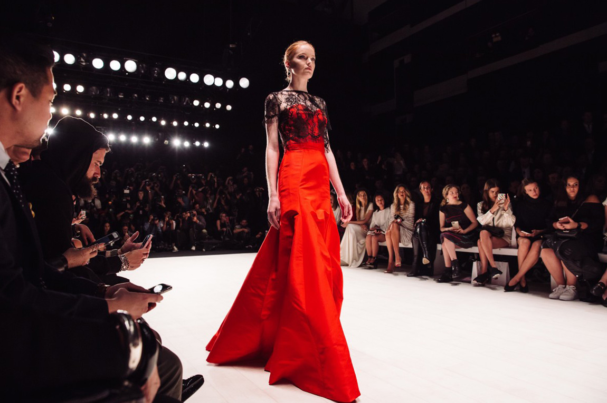

Salut! Moi C est Capucine, je suis étudiante en première année à l'Essec. Dans mon quotidien j aime être active, sortir avec des amis, rencontrer du monde. J aime aussi beaucoup la mode, je fais notamment partie de modessec ( association de mode de l essec ) et j adore passer des heures à arpenter les friperies à la recherche des futures pièces qui rempliront mon armoire !
Je suis quelqu'un d assez créatif et j aime bien faire des petit projet de création, avant au lycée je fesait 3h d art plastique par semaine mais depuis l essec j ai malheureusement beaucoup moin d occasion.ESSEC Business School
"Je suis passionée de Mode Depuis que je suis petite, j'ai toujours aimé la mode, je crois que je peux même dire que j'ai grandi dedans. En effet, venant d'une famille où la mode est déjà très présente, la voie était grande ouverte pour moi. C'est pourquoi je m'informe quotidiennement, que ce soit via les réseaux sociaux ou les journaux....
Mon association préférée est ModESSEC Je suis membre et très active dans l'association Modessec. C'est une association où on discute de mode certe, mais pas que ! En effet, nous prévoyons aussi de nombreux évênements tel que des Gala, des friperies et pleins d'autres ateliers.
Je suis étudiante en première année en Bachelor in Business Administration à l'ESSEC Business School en track francophone et je suis à la recherche d'un stage opérationnel de 3 mois entre mi-mai et mi-septembre dans la mode ,l'évènementiel, la culture ou dans tout autre secteur lié au commerce. Je cherche à acquérir, à travers une fonction opérationnelle, une expérience concrète du monde de l’entreprise et du travail au sein d’une équipe.